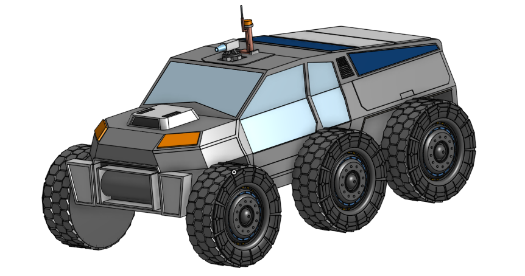

This rover is the Phase 1 design concept from a larger research paper proposing a three-phase transportation architecture for an early Martian settlement growing from 10 to 1,000 residents. Phase 1 (10–100 people) argues that pressurized, crewed rovers are the right transportation mode for a settlement's earliest stage, before rail or maglev infrastructure is justified, and this CAD model is the physical design proposal backing that argument.
The Martian Terrain Rover (MTR) is a 4-crew, 6-wheel vehicle modeled at 8m long, 4m wide, and 3m tall, notably larger than research rovers like Perseverance, sized for an enclosed, pressurized cabin so crew don't need spacesuits inside it. Every design feature, from the tow cable to the dust shielding, was researched and scored against NASA's Technology Readiness Level (TRL 1–9) scale, backing each design choice with real missions and published research rather than just intended function.
Derived design constraints from Martian conditions: dust, radiation, thermal cycles, reduced gravity.
Scored rovers against utility rail and maglev pod concepts on 9 criteria to justify the Phase 1 choice.
Modeled the 6-wheel, 4-crew rover in Onshape at full proposed dimensions.
Justified every design feature against real missions and published sources on a 1–9 TRL scale.